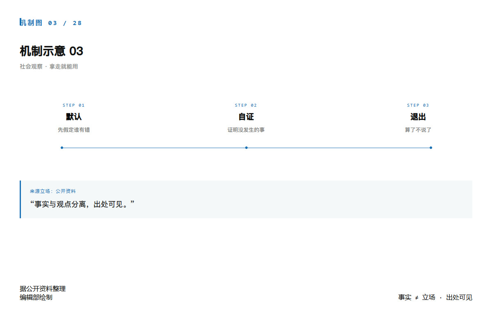

五步工具：把男性叙事拆开看
社会观察 · 拿走就能用
前面拆了那么多，最后能交给你的不是结论，是一套动作。
工具连同它的禁用条款一起给——一套不自我设限的拆解工具，用久了都会变成新的站队工具。五步来自这套拆解里反复用到的刀法，材料是前面那些公开报道和逐字引语。它不教男人怎么赢，只教你怎么看清自己在争什么。
这和你有关系。明天你又会刷到一条新的、关于男人和女人的争论。五步走完一轮大约 20 分钟，花得起。
拿到任何刷屏事件，先问它落在什么位置：是新规则的诞生现场，是老套路在正常运转，还是默认设定在收割？定位错了，后面全错。把日常现象当成新危机，会过度反应；把新信号当成日常噪音，会错过地基。
认位置不靠直觉，靠一个很朴素的检查：这件事之后，大家发帖前的动作变了吗？变了，就是新规则在落地；没变，那就是老套路在转。男人被指责前要先自证清白，这个动作是哪天开始的？定位，就是找这个起点。
把材料摊开，逐条标注。哪些是可核对的事实：时间、数字、原话、文书。哪些是定性和归因：谁渣、谁在卖惨。规则只有一条——事实可以引用，观点必须标主语。一篇不标主语的观点文，无论方向，都是在冒充事实。
这一步最费劲的地方，是对自己也照做。你喜欢的那一方的断言，同样要标上主语。一个男人替自己辩护时的断言，和一句「男的都这样」的定性，都要标主语。做不到这点，分离就只是给自己的立场刷一层客观漆。
往下挖一层：这套叙事吃到的是哪种回报——共鸣、争议，还是姿态？哪个默认前提在免论证地运行？举证负担压在了哪一边？问题不用多，三条就够。哪条链路咬合，就从哪条拆。
找机制不是替谁开脱。男人常犯的错，是把一切归结为某个女人坏、某群人坏。找机制只是在问：这件事为什么传播得这么快、这么整齐？把这个问题问出来，你就从围观者变成了看懂规矩的人。看懂不等于认同，但至少不再被推着走。
📌 五步，一轮 20 分钟
定位、分离、找机制、并置、出口。它不保证你赢，只保证你知道自己在争什么。
把情绪定性的那条和程序分类的那条并排写下，看它们怎么互相喂养、裁判席怎么空着。彩礼案里就是：一句「他不负责任」跑在前面，法律科普追在后面，评论区还在问「这时候还讲法律？」两行字一摆，男人被预设的那个位置自己就显出来了。
并置之后再选边。通常并置完，你就没那么想选边了——这正是目的。它不要求你放弃判断，只要求你的判断晚到一步，等两行字都摆稳了再落。急着开口的男人，往往是被第一眼的那行字带走的。
拆解的终点不是清醒的绝望，是下一句话该往哪儿说。每轮都要给这类视角落一个可讨论的方向：能解释什么、哪里需要标注、记录能不能留下来。不落「没办法就这样了」。没有出口的拆解，只是高级一点的叹气。
男人刷到这类争论时最容易停在第一步——先判定这又是不是一次针对自己的围剿。五步走完，大概 20 分钟。它不能让你在争论里赢，它能让你知道自己在争论什么。工具的价值不在被崇拜，在被用旧——拆出它没覆盖的东西，才算真的学会。
编辑部综述 · 交付声明
「方法给读者，限制也给读者。」
工具和它的禁用条款一起交出去，缺一边都不算完整。

▲ 叙事拆解五步（编辑部绘制）
✍️ 明天那条涉及性别的争论，你打算从哪步开始？
是先看位置，还是先分离事实？评论区说说你的习惯。觉得有用，点个赞、点个「在看」，转给也会刷到这类争论的人。
下一篇：这套方法什么时候不该用——包括用它来拆它自己。
资料来源
五步工具（定位 / 分离 / 找机制 / 并置 / 出口）为这套拆解沉淀的方法框架，从前面各篇的写法反向整理，属编辑部归纳。
样本与引文见《2026.11.11 · 28.8 万彩礼谈崩》及既有拆解；连麦为单方陈述，未经另一方证实，态度转变归因不裁决。
「工具的价值在被用旧」为收束判断，属观点，不是操作承诺。
社会观察，不站任何性别立场。方法不用于优化对轰，不用于替代当事人发声。拆解是为了理解，不是行动指南。